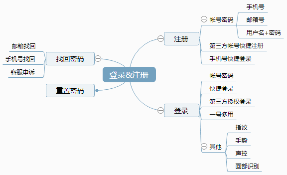
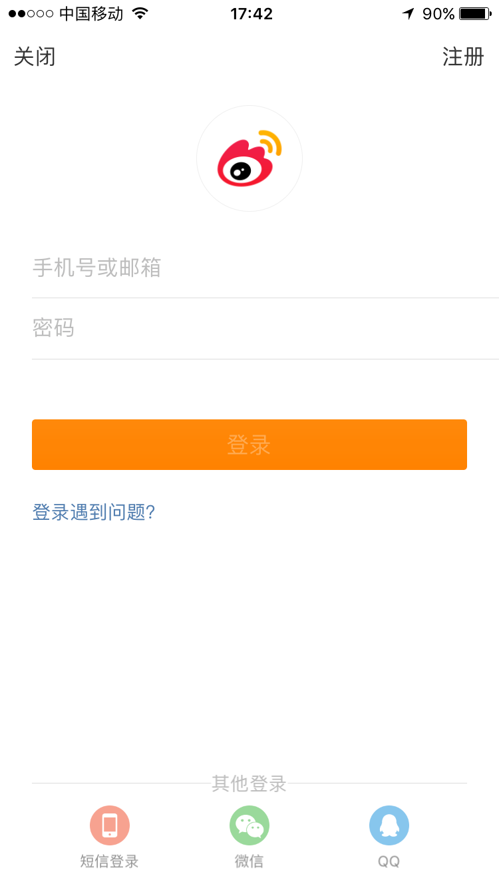

什么是登录注册？
分享人：王佳妮
目录
1.为什么需要登录注册？
2.登录注册的方式有哪些以及特点？
3.登录注册如何具体设计？
4.参考文献
5.更多讨论
1.为什么需要登录注册？
（1）满足用户个性化需求
（2）满足用户隐私需求
（3）方便产品提供更好的服务
2.登录注册的方式有哪些以及特点？
（1）登录：
A.帐号密码：（手机号/邮箱号/独立账号+密码）

B.快捷登录：（手机号+动态密码）
C.第三方授权登录：(以授权社交软件居多，例如：QQ、微信、新浪微博等)
D.一号多用：一个账号，(多个软件都可以使用登录，和第三方类似)

E.指纹、手势登录：(一般都用于二次登录，为用户的帐号多加道保险)
（2）注册：
A.手机注册
B.邮箱注册
C.用户名注册
D.昵称+手机号注册
E.不需要单独注册：第三方、手机动态登录、一号多用
3.登录注册如何具体设计？
（1）首先思考几个问题：
A.为谁设计登录注册——用户画像
B.是否一定要登录注册——产品定位
C.是否需要独立的账户体系——产品定位、发展战略
D.哪些操作需要用户登录——产品功能
（2）其次根据产品类型来看设计需求：
A.社交型、社区型产品——需要用户大量传播

B.交易类产品——安全为上
C.工具型产品——提供服务


（3）最后举例说明：
A.滴滴打车

B.大众点评

4.参考文献
（1）在APP设计中，不同种的注册方式和登录方式
5.更多讨论
鸣谢
感谢大家观看
BY :王佳妮